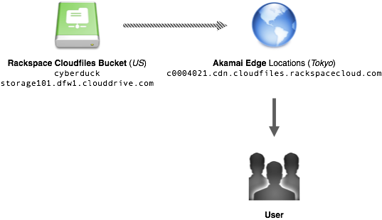
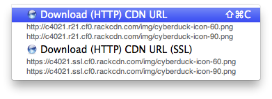

Akamai (CDN) Support¶
Akamai is the CDN provider for Rackspace Cloudfiles. A container can be enabled for Akamai in the Distribution (CDN) tab of the Info panel.

Basic (Download HTTP) Distributions¶
Used to serve static content. The files you elect to be public are shared out over a content distribution network with locations all over the world. The first time your content is served to a worldwide user (one in Tokyo, for example), a copy of the content will be stored in cache on the edge servers in that location. The next time the content is requested, it’s pulled directly from the cached copy on the edge servers, dramatically reducing delivery time.
Example Configuration: 
Deployment Status¶
The configuration updates are fully propagated status switches to CDN Enabled.
Distribution Access Logging¶
When this option is enabled in the File → Info → Distribution (CDN) panel of a container, access logs are written to /.CDN_ACCESS_LOGS. Use View → Show Hidden Files to access the *.gz log files.
Invalidation¶
To force the CDN to refetch the files from the container source, you can invalidate (aka purge) objects from edge locations. Use the Invalidate option File → Info → Distribution (CDN) to remove objects or the entire container from the CDN cache.
Index File¶
You can assign a default root object for your distribution. This default object will be served when Akamai receives a request for the root of your distribution – i.e., your distribution’s domain name by itself.
URLs¶
You can access all URLs (including from CDN configurations) from the menu Edit → Copy URL and File → Open URL.
Note
You must first open File → Info → Distribution (CDN) before these URLs are available.
